Years ago I read the book Born to Run by Christopher McDougall, and as is inevitable for any reader of that book, I was instantly and intensely inspired to try to become a "real" runner. You really only have to read this one excerpt to understand why:
"When it comes to the top 10 health risks facing American [people], the Tarahumara are practically immortal: Their incidence rate is at or near zero in just about every category, including diabetes, vascular disease, and colorectal cancer. Age seems to have no effect on them, either: The Tarahumara runner who won the 1993 Leadville ultramarathon was 55 years old. Plus, their supernatural invulnerability isn't just limited to their bodies; the Tarahumara have mastered the secret of happiness as well, living as benignly as bodhisattvas in a world free of theft, murder, suicide, and cruelty. So how do they do it? How is it that we, in one of the most technologically advanced nations on Earth, can devote armies of scientists and terabytes of data to improving our lives, yet keep getting fatter, sicker, and sadder, while the Tarahumara, who haven't changed a thing in 2,000 years, don't just survive, but thrive? What have they remembered that we've forgotten?"
McDougall goes on to build a strong case for the claim that endurance running is a major component of the answer to that question. After finishing the book, I was convinced that "born to run" is less of an emotional statement from a passionate runner and more of a scientific truth... ok, ok, I should restrain myself before I start to sound like a cult member, although if there's any cult I'd want to be a part of, this is likely the one.
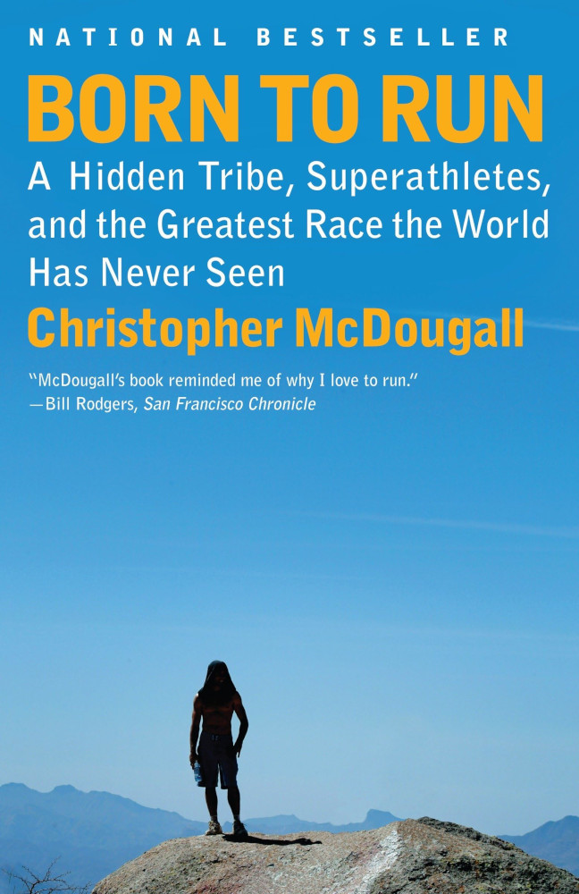
I wasn't new to running when I read this book. I'd already been through high school cross country and done quite a bit of recreational running in my early college years. In the fall of 2019 I accidentally ran my first half marathon, and it was the most enjoyable running experience I'd had to that point. So I already knew about runner's high, and already had gotten tastes of the physiological and psychological benefits. But reading this book really solidified the motivation to push it to the next level.
I also want to give a lot of credit to my mom, who convinced me to try cross country in high school even though I initially had zero desire to do so. If it weren't for her encouragement, I have no idea if or when I would have "discovered" running. Thanks Mom!
In the spring of 2020, I signed up for a marathon training class and my first marathon. Unfortunately, this first attempt didn't last very long. I quickly overtrained due to my excitement and was left with a terrible case of IT band syndrome. I dropped the class, skipped the race, and had to rest for multiple entire months before my body was healed. But although it might have looked like a complete failure from the perspective of a Strava follower, in some way it was still a success, because learning from failure is a pretty efficient way to learn.
I went to a sports medicine doctor, hoping to learn how to heal my injury and prevent it from happening again, but they basically told me to just not run so much and to take anti-inflammatory medication to reduce the pain. Useless. So I had to learn myself by reading a bunch of articles and research papers. It was tedious and frustrating to sift through and figure out what information out there is actually true and meaningful, but eventually I felt I had a handle on things.
The first important thing I learned was that modern running shoes are kind of a scam. "Born to run", but only with a human made plastic contraption strapped to my foot? No. Just no. It makes no sense. The foot is a beautiful, dynamic contraption of 26 bones, 33 joints, and over 100 ligaments, tendons, and muscles, designed by the best engineer, evolution, and iteratively improved over hundreds of thousands of years. How dare shoe companies claim to know better! So I threw my stability shoes in the trash and bought some Altra Torins, which are a medium cushion shoe with no heel to toe drop, no arch support, and no motion control structures. I have not been injured since. Side note, the Altra origin story is a great read. Yes, I know this paragraph makes me sounds like a shill, but the results speak for themselves.
The other important thing I learned was that having strong hip abductors is a must. Read research papers on any common injury in the feet, ankles, or knees, and you will see that weak hip abductors is a strong candidate for root cause for all of them. With this knowledge, I started doing side leg raises, fire hydrants, and pistol squats on a regular basis, and somewhat ignored exercises for all other muscle groups. I have not been injured since.
Now, I'm not saying these things make it impossible to get injured, but I've found that with the right shoes and the right exercises, the threshold for overtraining seems to be much higher and more predictable.
As I sat around waiting for the healing, I consumed as much running information as I could find. This book stood out to me as the most clear and comprehensive summary of both the basics of exercise physiology as well as the guiding principles for designing a training plan: Modern Training and Physiology for Middle and Long-Distance Runners by John Davis.
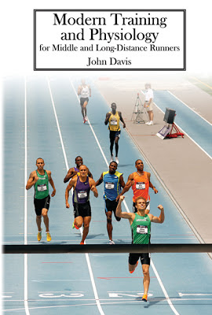
In the fall of 2020, after I had fully healed, I got a solid chunk of running in before winter, enough to prove to myself that with my newfound knowledge, I could handle a faster ramp and higher volume. For a few years after this, I was distracted by other priorities and happenings in life, but the desire to run a marathon was still always in the back of my mind.
In the fall of 2024, I signed up for Grandma's marathon. Once the snow started melting in the spring, I jumped right into training. I made sure the weekly long runs were roughly correct, but other than that I just ran as much as my body felt like it could handle and rested whenever I failed the bounce test[1]. Everything was done at an "easyish" intensity. I think this worked well to improve endurance, but in hindsight I should have varied the pace more. A bit of speed work might have allowed me to go faster, and a bit of truly easy running might have allowed me to get more total miles in.
There were a couple of training runs that stood out among the rest. The first was a random short run, which I journaled about immediately after. I'll just let you read that journal entry, because if I try to re-explain it now after the fact I'll probably miss the magic of it.
"2025-05-05 - Today I had the most fun run in years. 5 miles at 7:13 mile pace on the luce line trail after work. This was the first time in multiple years that I've run that pace without it feeling like I had to push myself mentally. I was just cruising along having a blast.
As is typical for me on good runs, the music I listened to was an important part of it. I had the live versions of Trains and Anesthetize by Porcupine Tree on repeat. This was one of those rare moments where I actually got chills from the music. When the audience started clapping along in the second half of Trains, I picked up the pace to match my cadence to the clapping and the flow feeling was immaculate.
Unlimited energy, zero physical fatigue, and zero brain fog. I felt so alive, and had random urges to start sprinting full out or to let out an audible "WOOOO!"
It was beautiful out, 77 and sunny, one of the first real warm days of the year. I had my shirt off and was completely drenched in sweat by the end. I don't know what it is, but every time I sweat this much I feel soooo good.
My legs were still a bit sore from running 17 miles two days prior, but somehow despite that they also felt springier than ever. I was literally bouncing along. I felt taller.
I feel like everyone should experience runner's high once in their life so they know what they are missing out on. I get so tempted sometimes to start begging everyone I know to give running a real attempt. Just once, for a few solid months. You know when you get a new toy, let's use a road bike as an example, and let your friend try it, and they come speeding back, giggling, with a grin on their face because of how much fun it is? I wish I could do that with my body. I wish I could let people take it for a spin to get a taste of what is feels like to be in endurance running shape. It's unfortunate that the barrier to entry for this feeling is so high, but wow is it worth the effort."
The second notable run was the 20 miler, the last long run before the marathon. For this run I went to a Mill City Running group run so that I could have some company, and it was a freaking blast. The weather was perfect, my body felt great, and the people... well, the people were crazy in the best way. 7AM on a Saturday, 12 miles into a 20 mile run, and this dude was playing music on his phone and singing along while we were running up a steep hill at 7:00 mile pace. They were doing speed intervals throughout the run. I was laughing to myself thinking what in the world have I gotten myself into...Adam and Erik, you guys know how to have a good time in running shoes! Anyways, this run is the one I'm most proud of, even more so than the actual marathon. I was so well prepared for it, ran a really good pace, and felt pretty much fine afterwards. I kinda wish I would've taken advantage of the good day by just extending it into a marathon. Only 6 more miles. I would have absolutely demolished my actual race time... but oh well, I'll cherish it for the experience it was.


Shoutout to my friend Ben, ironman in training, for joining me on many of the long runs. Saturday mornings at the chain of lakes started to feel very routine. It's an exciting feeling when you set off and know for sure that you'll be able to run at least a half marathon very easily. I was never sure each week how the last few miles would feel, but that first chunk was always a breeze. A nice "unstoppable" type feeling.
For a lot of the mid week runs, I tried to check out some different running groups around the cities, which I enjoyed a lot. I'm finding that this is a great way to meet new people. It's nice because the main focus is the running, so the social part of it is really low pressure. You can choose to talk a ton, or to just exist and eavesdrop, and both are welcomed as totally normal. And conversations only carry so far, so they tend to get limited to very small groups, which I prefer over large group socialization. The only frustrating thing is that not everyone runs at the same pace... have you seen those tiktoks claiming that running groups are the new dating app? Well, I did, and I was intrigued, until I found out that most of the time when I'd show up to Mill City or Saint City, the larger running groups, I'd just end up in a herd of sweaty try hard dudes... I guess that's what I get for being a sweaty try hard dude. But anyways, I met a lot of cool new people.
The race was scheduled to start on Saturday June 21st at 7:45am, but the real adventure began the night before. At 9:00pm, just as my sister and I were getting settled into the tent to sleep, an email showed up from the race organizer folks. "We and our partners at NWS Duluth are tracking strengthening storms that are expected to bring 30-40 MPH wind gusts and 2in hail. These storms will move into our area at midnight and are expected to reduce in intensity by 3:00 a.m." I immediately started to regret the decision to camp instead of just getting a hotel like all the normal people. Luckily the forecast turned out to be an exaggeration and the storm wasn't a real concern, but the rain and wind were still quite loud in the tent, so I didn't sleep at all. How do some people sleep like a rock in conditions like this? I'm so envious. My subconscious just can't seem to handle the undulations in the storm... every time a wind gust is rising, my heart rate rises with it. My fight or flight response seems to be severely overreactive... argh. I guess in cavepeople times I would've been the guy keeping watch at night.
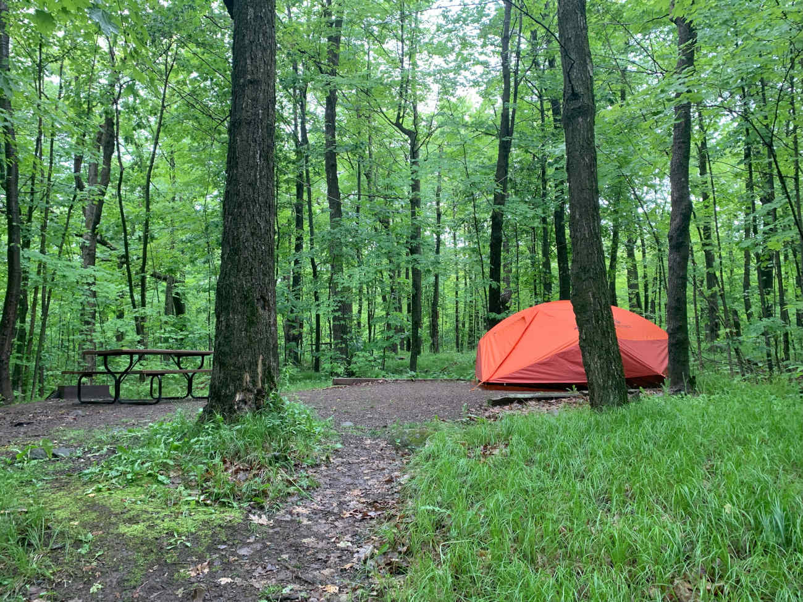
At 4:45am the alarm rang and honestly it was a welcome end to the restless night. If I wasn't going to sleep well anyways, might as well get the show on the road! Jogging to the bathroom and back I actually felt pretty fresh, which made me optimistic that the poor night's sleep might be a non-issue. Wrong, but a nice thought to keep me motivated through the morning.
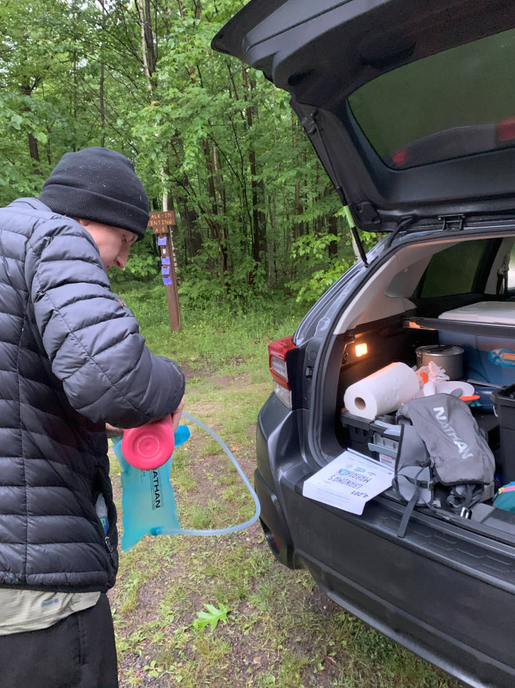
At 5:15am my sister dropped me off at the bus stop. I stood in line for about an hour, and then the bus ride was another hour, and then the line for the porta potties at the start another hour... It was a bit hard to keep the psyche up through all of that, but the adrenaline kicked in again as I became stressed about how slow the bathroom lines were.
At 8:15am, the gun went off literally as I left the porta potty, so I ended up running to the start line along with a whole herd of other people in a similar situation. It didn't really matter because the timing was based off of when the bib chip crossed the start, but I wanted to be with my pace group!
As we started, some fighter jets flew over a few times and holy crap was that an insane experience. I've seen flyovers at sporting events before but I guess when there's no stadium or city they can get really really low, and go really really fast... that or they were not following protocol. I didn't realize that kind of noise was possible. It sounded like the laws of physics were being violated, as if our universe is a simulation and it was glitching out because it couldn't handle the insanity. My initial reaction was one of awe and appreciation for the technology, but then I quickly started to imagine how that sound would digest if I was a child afraid of being bombed... not so cool after all. Terrifying. I was left with a feeling of disgust.
For the first few miles it was a little chaotic but in a fun way. Even at the marathon distance the temptation to run too fast at the start was insuppressible... the whole herd was absolutely cruising for a while, and people were frantically weaving around each other trying to find their pace groups. It made me reminisce about the adrenaline rushes at the start of cross country meets in high school.
The first half went pretty much exactly according to plan. 7:56 mile pace overall, a little faster on the downhills and a little slower on the uphills. My legs felt tired but not unreasonably so, and I felt hydrated and fueled. I remember checking throughout the first half to make sure that I could breathe through my nose comfortably if I tried, and I always could. I felt calm and fast.

The second half, I'm sad to report, was a complete flop. One moment I felt as I described above, and the next I simply couldn't breathe in. There was no transition. No period of breathing hard. I just all of a sudden couldn't breathe. I was forced to slow down, and then slow down some more, and then some more, until I was faced with the thought of walking for a bit. I was devastated. Failing my optimistic goal of running a 3:30 was not that big of a deal, but I really didn't want to also fail my more serious goal of running the whole thing without walking. If I walked, I wouldn't be able to say I've "run" a marathon. If I walked, I wouldn't be able to call myself a "real" runner. To be clear, I don't judge others for using those terms more casually. Gatekeeping is bad. But, for me judging myself, that's how I see it.
Desperately I checked myself, hoping to realize that my body had more to give and that it was just my mental that was giving out, but after a moment of focused mindfulness I could only laugh and sigh at that hope. It was time to walk or I would collapse. And so, for the next 12 miles, I alternated between walking and shuffling. It basically turned into an interval workout and was a complete suffer fest. My upper chest and back were screaming in pain and I wanted nothing more than to lie down.

Finally I made it to the finish line, and honestly I was trying not to cry while crossing it. I got my medal, stumbled through the chute, grabbed some snacks, and flopped down in the grass.
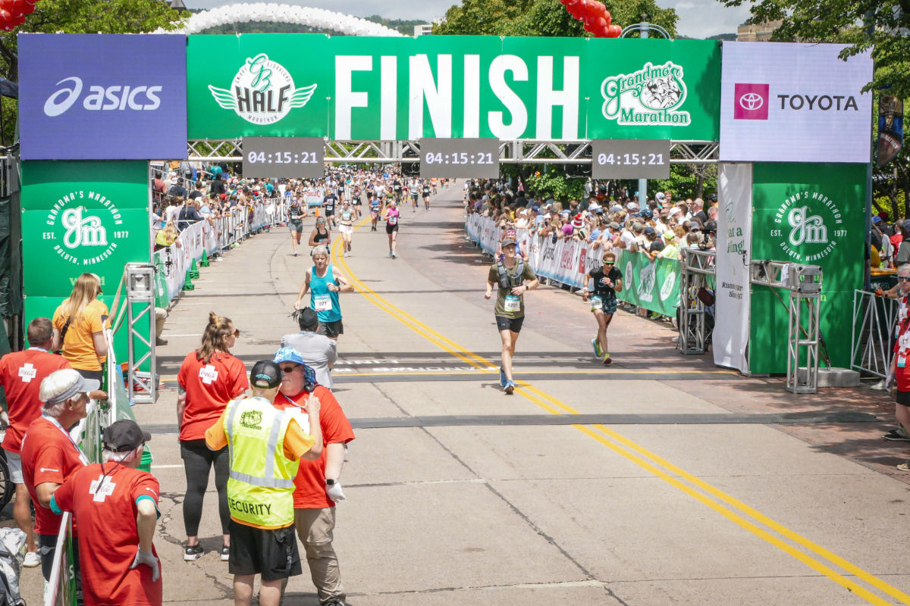
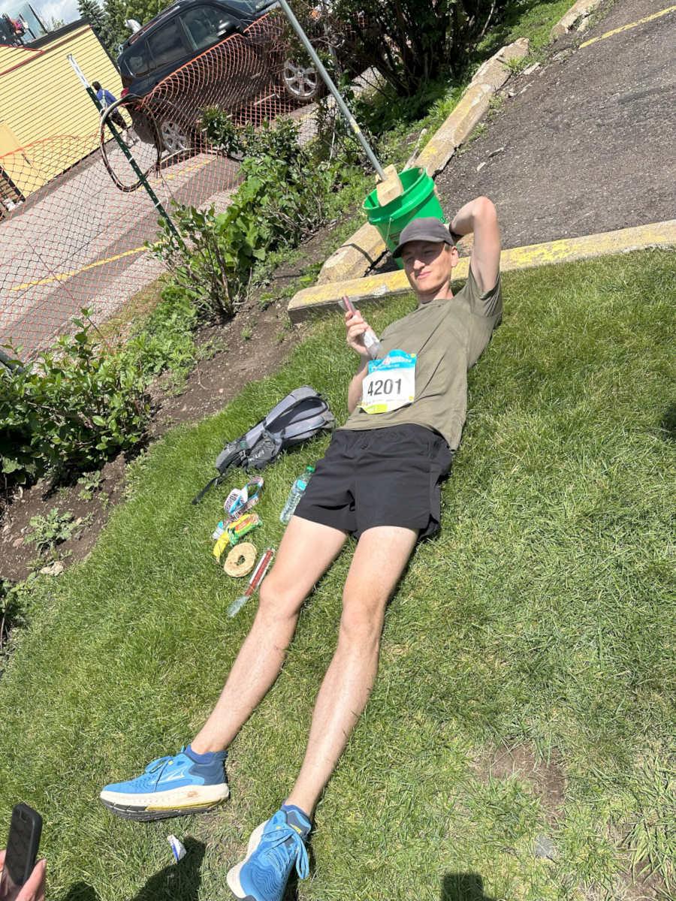
At this moment, I still had no idea what my time was, as I hadn't bothered to look at the sign as I crossed the line. All I knew was that I had failed all of my goals. It was a hard reality to accept since this race was the culmination of like five years of yearning and four months of arduous training. Of course I was physically exhausted, but I was even more mentally exhausted. It took me a bit to feel any happiness, but eventually "I finished a marathon!" did start to sound satisfactory. It's a massive step further than I've ever made it in the past, and as I reflected on all of my training, I realized that there's no reason why the big event should be the only thing I judge myself by. That 20 mile run became enough in my mind for me to confidently say to myself that I am a "real" runner.
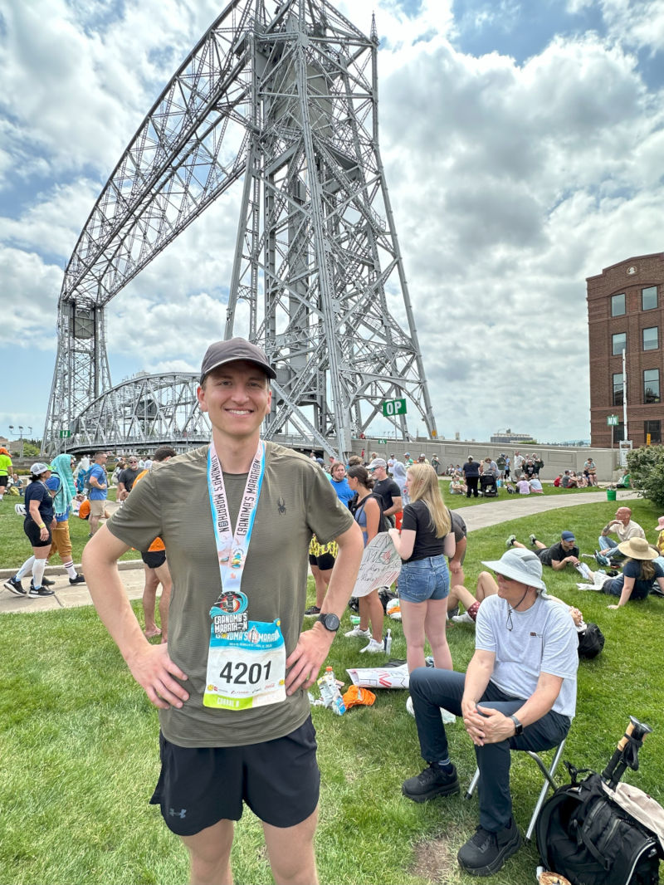
Here are the splits in case anyone is curious.
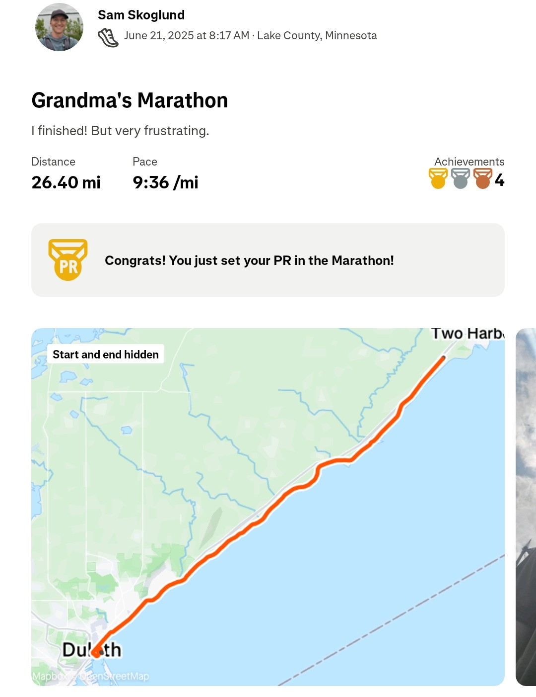
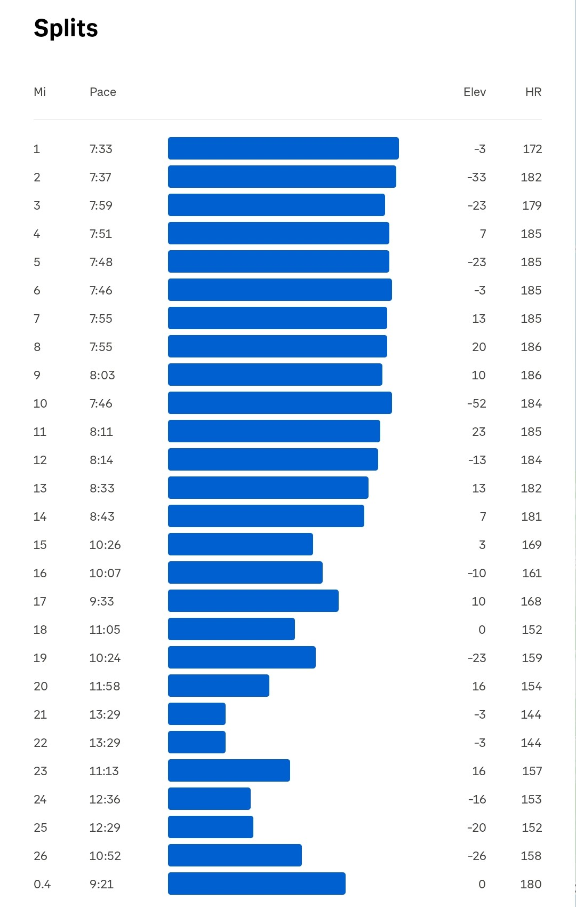
Shoutout to my family for being a wonderful support crew!
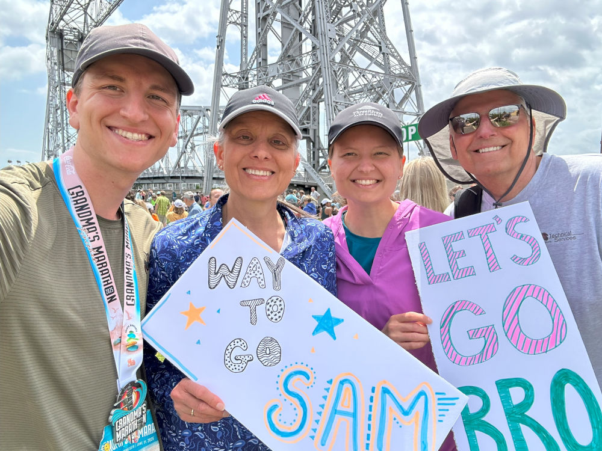
I only managed to relax for like one day after the race before the curiosity worm in my brain woke up and took control. What actually went wrong? Why did it go so much worse than my last few long runs during training? How can I fix it? How soon can I run another marathon and get redemption? I got off the couch, logged into my computer, opened obsidian[2], google scholar, and litmaps[3], and got to work answering those questions. Here's the heart rate plot. Ignore the zones, COROS is way off because I just got the watch and it hasn't adjusted away from the defaults much yet. I believe my max is about 210 and my threshold is about 189.
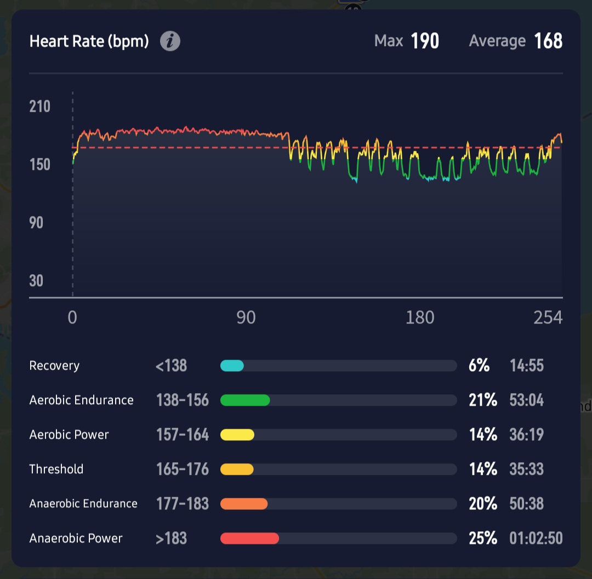
As you can see, the first half looks pretty normal for a race, but in the second half, despite me still trying my hardest mentally, my body was not functioning. I think there are basically three possible explanations.
It could be that I simply ran out of aerobic and anaerobic energy, which caused my breathing muscles to be so fatigued that I couldn't breathe in. From what I understand, that is a very normal phenomenon to experience when you push yourself to the limit. Known as "bonking".
It could also have been some sort of normal autonomic nervous system reflex due to fatigue.
It could also be that my breathing failed before my energy was depleted, due to some sort of physiological dysfunction like exercise induced bronchoconstriction.[4]
I don't know which of these is/are correct, so I figure I should just plan to address all of them. The answer to the first and second is easy; I just need to train better. Which I think I know how to do. Higher weekly mileage, easier easy runs, more speed work, better nutrition, better sleep, more strength training, plyometrics, etc. I have tons to improve on.
But I'm suspicious that the third thing might be at least part of the story, because this isn't the first time I've experienced this. I remember that during high school cross country, the 5k races always went one of two ways. Either I could breathe and I'd run like 19:XX, or I couldn't breathe and I'd run like 22:XX. No in-between. And every time this happens, my legs don't feel depleted. So I went to the doctor, and he gave me an inhaler to try. A couple weeks later I did try it for a 5k race and had no issues with breathing, but like I said before, it only happens sometimes, so I'm not sure yet.
With all of those thoughts explored as far as possible with my one datapoint, a new wave of motivation washed over me, and a few mouse clicks later I was signed up for the Twin Cities marathon, which is this fall. We'll see how round two goes... some days I'm more motivated than ever, but recently when I roll out of bed in the morning I've been feeling an awful lot like Deadpool rolling off the roof of this car.
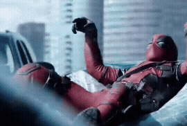
Even more frustrating than the physical fatigue is the accompanying brain fog that lasts for multiple days after each long run. I'm not sure exactly why this occurs, but again, it seems like there are multiple possibilities. Maybe it's just normal fatigue, or maybe I'm overtraining, or maybe I have some nutrient deficiencies, or maybe I literally burned some of my brain away when I needed extra energy. The science on that last one is fascinating.[5] But anyways, I try to always remind myself that this kind of voluntary suffering is a privilege to be grateful for. These challenges to overcome are what make it an interesting and fun and rewarding journey.
I've said "maybe" a lot in this write up. Maybe it's this, maybe it's that, maybe I need to do this or maybe I need to do that. In some ways I still feel like a naive child in this sport. Still in the "figuring out what I don't know" stage.
Regardless of what happens for the rest of this season, I'm guessing my marathon running journey isn't over. Someday I'd love to be able to say that I've "run" a marathon. And once I achieve that, I'm sure I'll be tempted by the goal to "race" a marathon.
A few more random photos from training and the race:
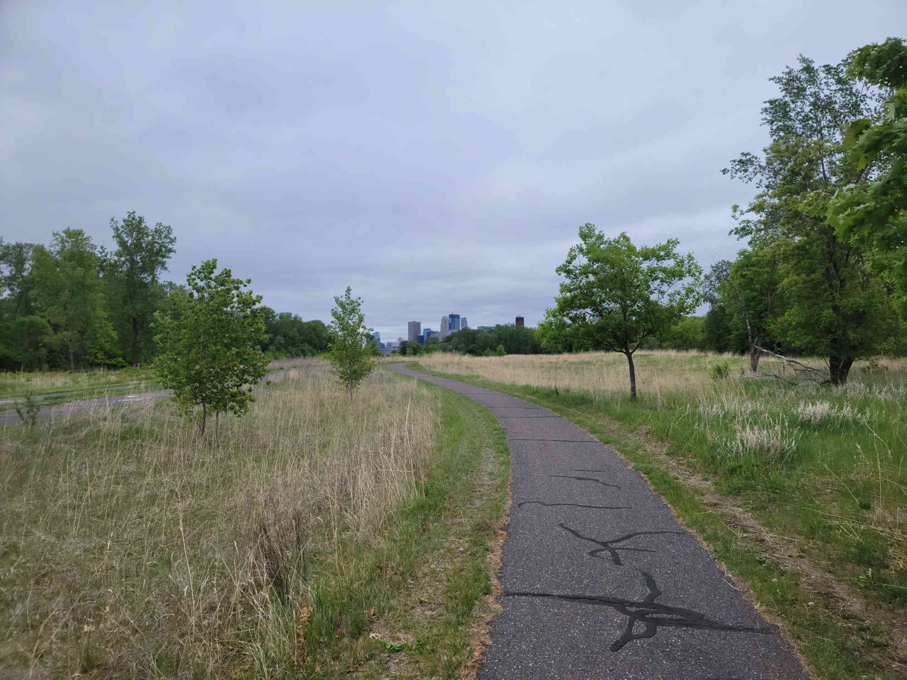
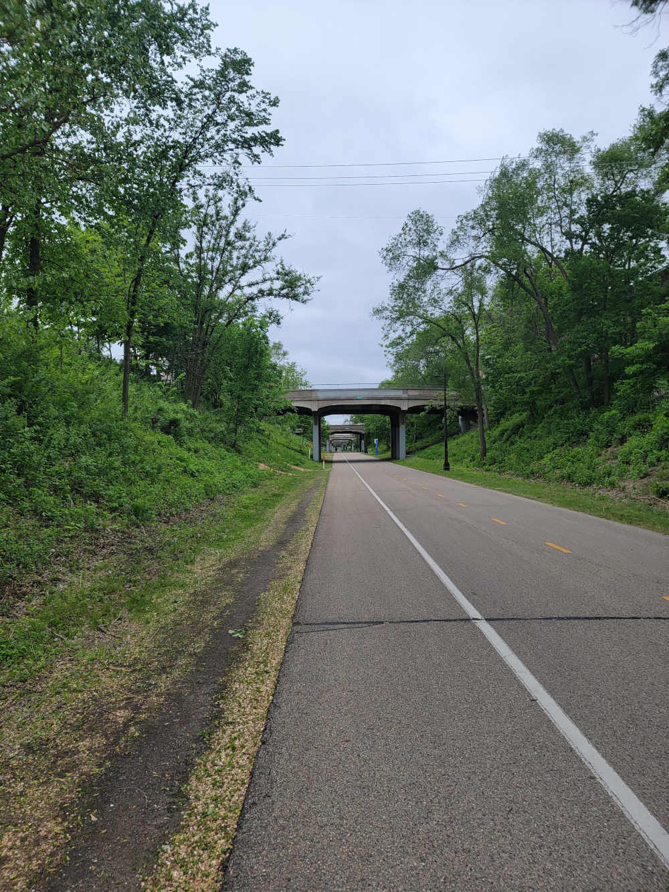
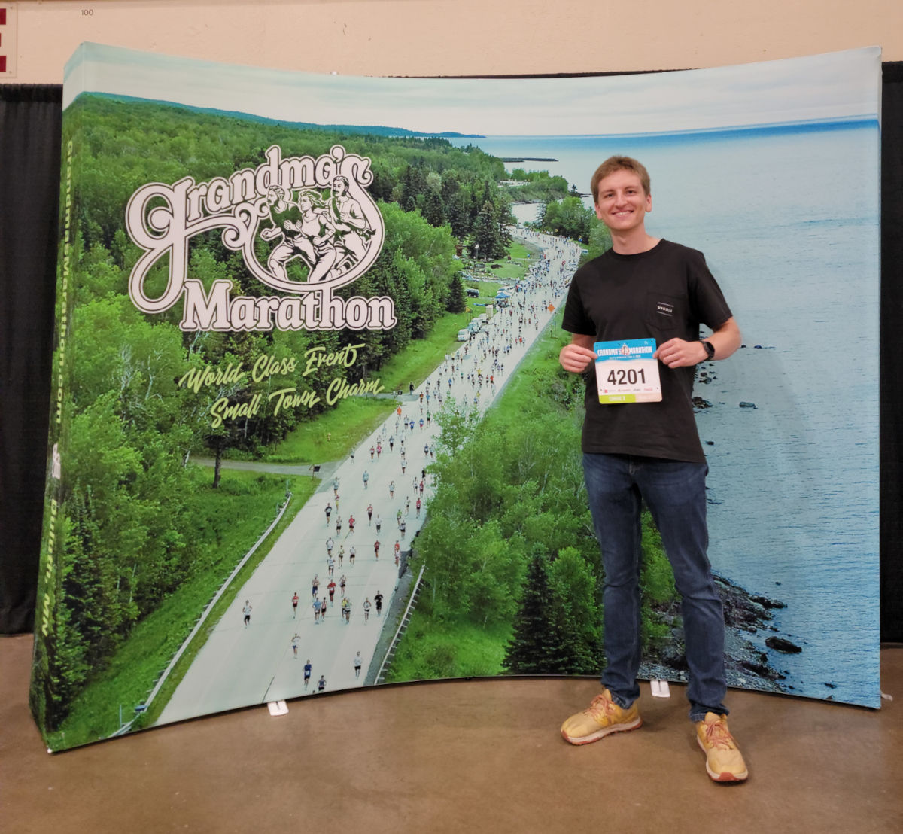
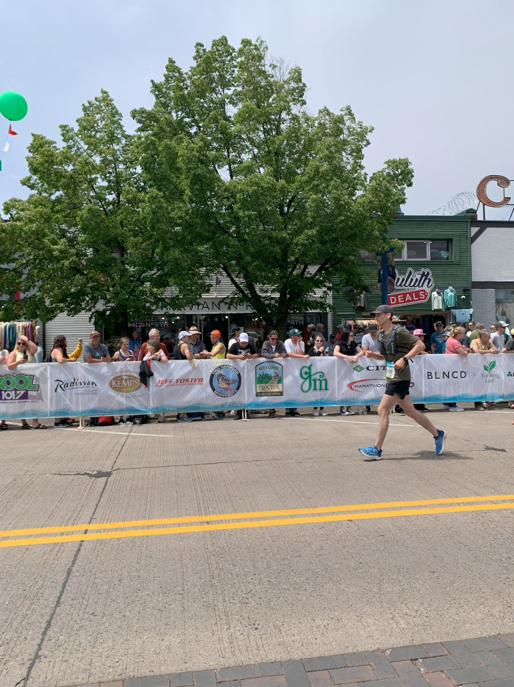